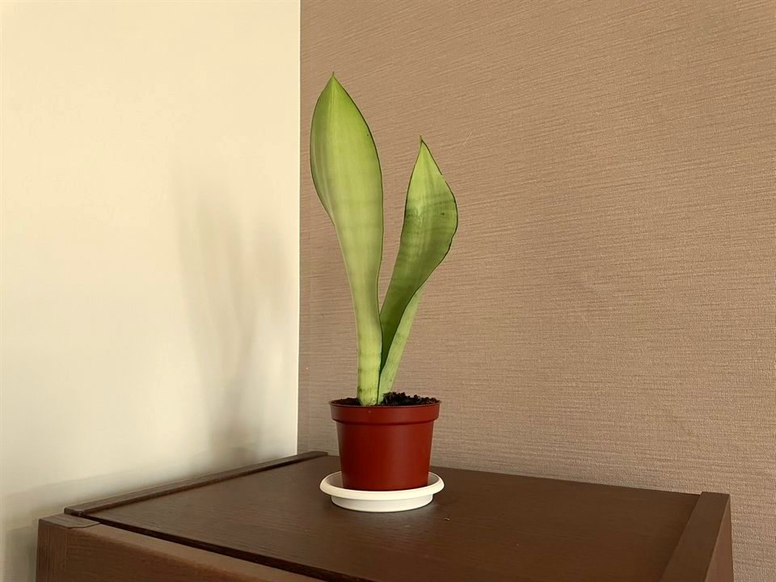

漸明服務

從你的需要出發，尋找適合的方向
每個人在人生不同階段，都可能遇到情緒、關係或生活上的困難。有時候，我們知道自己正在為什麼煩惱；有時候，卻很難說清楚究竟發生了什麼事。
心理諮商提供一個安全、值得信任的專業空間，讓你有機會談談自己的感受與經驗，從不同角度看待眼前的困難，並探索可能的因應方式。
在漸明，我們尊重每個人的需要與步調。諮商的目標與工作方式，可以在正式會談中，透過你與心理師的討論逐漸形成。
個別心理諮商
給自己一個被傾聽與理解的空間
有些困難來自生活中的壓力與變動，有些與長期累積的情緒或關係經驗有關，也有些是我們尚未找到語言表達的感受。
在個別心理諮商中，你可以與心理師一起談談目前的困擾，探索自己的感受、想法與生命經驗，並尋找適合自己的理解與因應方式。
你可能希望透過個別諮商面對：
- 焦慮、憂鬱、壓力或情緒困擾
- 自我認同、自我價值與內在衝突
- 人際關係、親密關係或家庭關係中的困難
- 失落、分離、重大生活變動與適應
- 生涯發展、職涯轉換與工作適應
- 組織管理、領導角色與職場人際關係
- 重複出現的困擾或難以理解的情緒反應
- 對自我成長與生命方向的探索
諮商的目標與方式會依照你的需要、心理師的專業評估，以及雙方的討論而有所不同。
服務對象：原則上為13歲以上的青少年及成人。實際諮商安排將依個別需求及心理師的專業評估討論。
伴侶、婚姻與家庭諮商 含親職諮詢
在對話中，重新認識彼此
在親密關係與家庭生活中，我們可能因為不同的期待、情緒經驗、溝通方式或角色責任，而經歷難以化解的衝突與困擾。
有時候，彼此都希望改善關係，卻發現熟悉的互動模式不斷重複；有時候，生活中的重大轉變，也可能讓原本的關係面臨新的挑戰。
伴侶、婚姻與家庭諮商提供一個專業的對話空間，協助參與者表達自己的感受與需要，聆聽不同的觀點，並共同思考關係中的困難與可能方向。
你們可能希望透過諮商面對：
- 反覆發生的爭執與溝通困難
- 情感疏離、信任與親密感的變化
- 伴侶之間的期待差異與重要關係抉擇
- 家庭成員之間的衝突與跨世代關係
- 家庭角色、責任、照顧安排與界線的調整
- 重大生活事件或家庭結構改變所帶來的挑戰
我們不以判斷誰對誰錯作為諮商的目標，也不預設每一段關係都必須維持。重要的是協助參與者更清楚地理解目前的處境，並探索適合彼此的方向。
家庭諮商參與年齡：原則上須年滿13歲。實際參與成員與會談安排，將依家庭需求及心理師的專業評估共同討論。
親職諮詢
在陪伴孩子成長的過程中，家長可能面對情緒、行為、親子溝通或教養方式上的困難。有時候，即使已經付出許多努力，仍然不容易理解孩子的反應，也可能對自己的教養方式感到困惑或挫折。
親職諮詢提供家長一個與心理師共同討論的空間，協助理解孩子的發展需要、親子互動，以及家庭生活中所面臨的挑戰，並探索適合自身家庭情境的因應方式。
親職諮詢原則上以家長參與為主，不以孩子接受個別心理諮商為前提。實際參與對象及會談安排，將依需求與心理師的專業評估討論。
團體心理諮商 規劃中
在與他人的相遇中，發現新的可能
我們與他人的關係，是生活中重要的一部分。有時候，透過與不同的人交流，我們也能從新的角度認識自己，理解原本不容易察覺的感受與互動方式。
團體心理諮商提供一個由專業心理師帶領的空間，讓成員在相互尊重與保密的原則下，分享經驗、聆聽彼此，並從團體中的互動與交流獲得新的體會。
不同團體可能有不同的主題、目標與進行方式。例如，有些團體著重情緒與壓力調適，有些關注人際關係與自我認識，也有些透過團體成員之間的互動，探索個人的關係經驗。
漸明希望支持不同專業背景與治療取向的心理師，依照各自的專長，逐步發展多元的團體諮商服務。
目前團體心理諮商服務仍在規劃中。未來將依各團體的性質，公布參與對象、進行方式及相關資訊。
如何選擇適合自己的諮商方式？
你不需要在提出預約申請之前，就已經確定自己適合哪一種服務。
有些困擾可以從個別諮商開始，有些則可能適合伴侶或家庭成員共同參與。即使問題涉及親密關係或家庭，也不代表一定需要選擇伴侶或家庭諮商。
你可以透過預約申請表提供基本需求，並選擇希望預約的服務類型。若尚未確定，也可以在表單中說明。漸明將依據所提供的資訊及心理師的接案情況協助安排；實際的諮商方式，則由你與心理師在正式會談中進一步討論。
諮商費用與預約方式
漸明心理諮商所採全預約制，晤談時段為每日08:00–22:00（含週末），實際可預約時間依各心理師排班而定。
諮商費用及晤談時間
- 個別心理諮商：NT$2,300–4,000／50分鐘
- 伴侶／婚姻諮商：NT$3,300–5,600／80分鐘
- 親子／家庭諮商：NT$3,300–5,600／80分鐘
- 親職諮詢：NT$2,300–2,600／50分鐘
- 團體心理諮商：規劃中
實際收費依各心理師之專業背景與服務內容而定。你可以前往漸明團隊，了解各位心理師的專長及服務內容。
如果你已經有希望預約的心理師，可以在預約申請表中指定；如果尚未決定，也可以由漸明協助安排適合的心理師。
送出預約申請後，漸明將依據你的需求與心理師的接案情況進行安排，並由心理師與你聯繫，確認初次會談時間。
如有服務項目、收費或其他行政事項的疑問，歡迎透過電話或電子郵件詢問。聯絡資訊請見聯絡漸明。
填寫諮商預約申請表送出預約申請表不代表預約已成立，須待心理師聯繫確認。